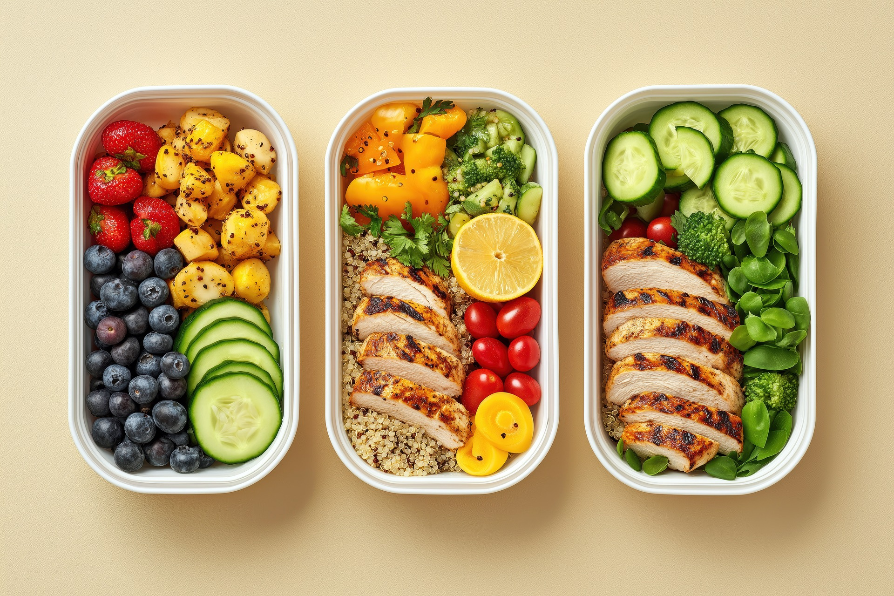
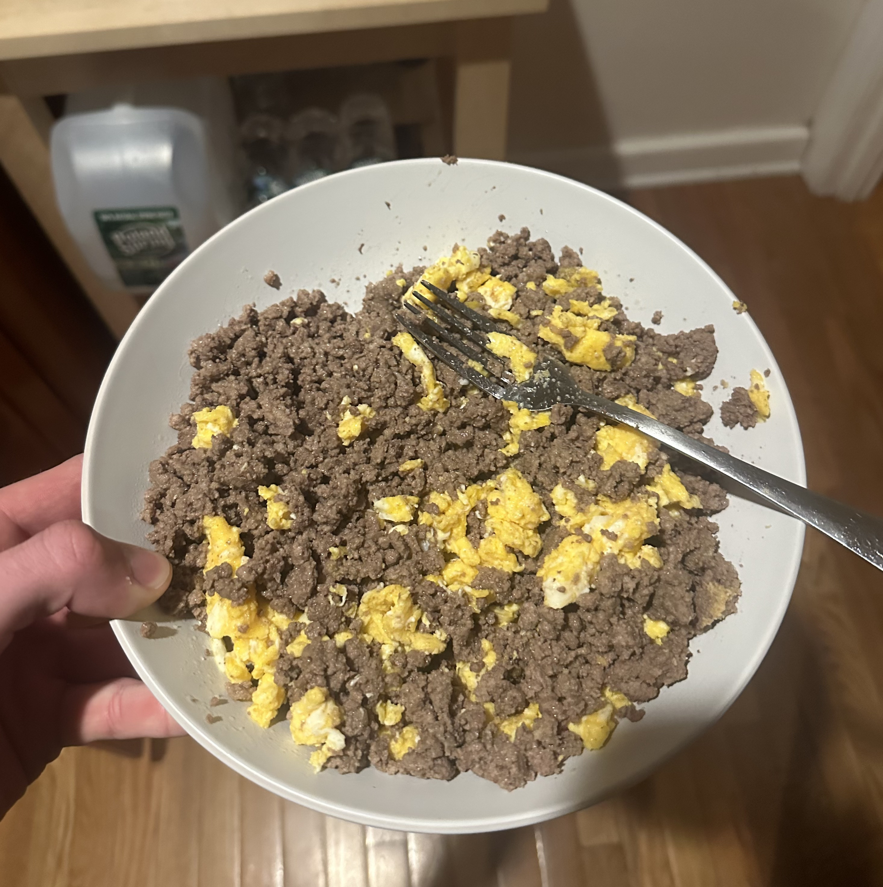

Page 3: The Fuel | Metabolism, Bulking & Nutrition

Cracking the Hard Gainer Code
Because I have such a high metabolism, I can't just "eat clean" and expect to grow. I've had to master the art of the bulk. The most important thing I've learned is finding your Maintenance Calorie Level which is the amount of food you need just to stay the same weight. For someone like me, I need to stay in a consistent surplus of 100-200 calories above maintenance every single day.
If I miss even one day, my metabolism burns through my reserves. Bulking isn't an excuse to eat junk; it's about a controlled, "lean bulk" so you don't put on unnecessary fat that you'll just have to suffer to lose later during a cut.
Science-Based Nutrition: The Nippard Protocol
I've leaned heavily into science-based protocols, like those shared by Jeff Nippard, to refine my approach to body recomposition.
"To build muscle, you don't need a huge caloric surplus; you need a consistent one combined with sufficient protein." - Jeff Nippard
My Personal Macros & Supplements

- Protein Goals: I keep my protein around 0.8g to 1g per pound of body weight. If I'm 190 lbs, I'm aiming for 180g-190g of protein to ensure my muscles have the amino acids they need to repair.
- Creatine Monohydrate: I take 5g daily. It's the most researched supplement out there. It increases your stores of water in your muscles, helping your muscles produce more ATP during those heavy sets. It's the difference between getting 10 reps or 12 reps.
- The Cut: When it's time to lean out, I don't crash diet. I slowly drop my calories by about 200 below maintenance while keeping my protein high to "spare" the muscle I worked so hard to build. Sometimes I'll throw in a 48 hour fast.
Everything I've put on this page is stuff I've learned through trial, error, and a lot of time figuring out what works best for my own body. Fitness is a science, but it's also about learning how your specific body reacts to different methods.